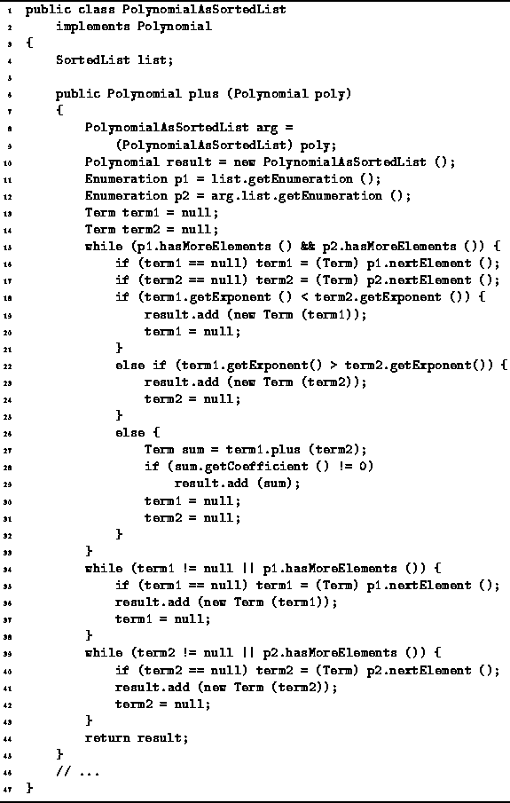

Data Structures and Algorithms
with Object-Oriented Design Patterns in Java
Data Structures and Algorithms
with Object-Oriented Design Patterns in Java
To begin with, we need to represent the terms of the polynomial.
Program  extends the definition of
the Term class introduced in Program --some additions are needed to support the
the implementation of polynomial addition.
extends the definition of
the Term class introduced in Program --some additions are needed to support the
the implementation of polynomial addition.
Four additional methods are declared in Program .
The first is a constructor which creates a copy of a given term.
The next two, getCoefficient and getExponent,
are simple accessor methods
which provide read-only access to the corresponding
fields of a Term instance.
Clearly, the running time of each of these methods is O(1).
The final method, plus, provides the means to add two Terms together. The result of the addition is another Term. The working assumption is that the terms to be added have identical exponents. If the exponents are allowed to differ, the result of of the addition is a polynomial which cannot be represented using a single term! To add terms with like exponents, we simply need to add their respective coefficients. Therefore, the running time of the Term addition operator is O(1).
We now turn to the polynomial itself.
Program introduces
the PolynomialAsSortedList class.
This class implements the Polynomial interface
defined in Program .
It has a single field of type SortedList.
We have chosen in this implementation to use
the linked-list sorted list implementation
to represent the sequence of terms.

Program: PolynomialAsSortedList class plus method.
Program defines the plus method.
This method adds two Polynomials to obtain a third.
It is intended to be used like this:
Polynomial p1 = new PolynomialAsSortedList (); Polynomial p2 = new PolynomialAsSortedList (); // ... Polynomial p3 = p1.plus (p2);
 Copyright © 1998 by Bruno R. Preiss, P.Eng. All rights reserved.
Copyright © 1998 by Bruno R. Preiss, P.Eng. All rights reserved.